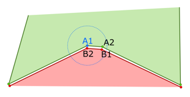

Points in faces can be merged together to form smoother surfaces.
The process involves assigning a tolerance value that defines a radius for a point on an open edge to find and match itself with a point on another face.

Two requirements is the edges of the two points must be going in opposite directions of one another and belong to the same feature.
If an edge has more than one neighboring edge, the edge will be skipped and the faces will not merge at those edges. Generally, this process is done to clean up degenerate and non-manifold geometry, for example fixing cracks and holes on surfaces.